<style>body{margin:0;background:#d6e0ea;font:14px Arial;display:grid;grid-template-columns:repeat(4,1fr);gap:8px;padding:8px}figure{margin:0;background:white;padding:8px;height:315px;box-sizing:border-box}img{width:100%;height:270px;object-fit:contain}figcaption{height:25px}</style><figure>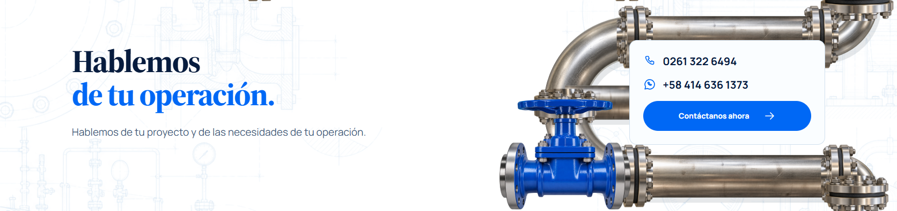<figcaption>articulos 8 · Hablemosde tu operación.</figcaption></figure><figure>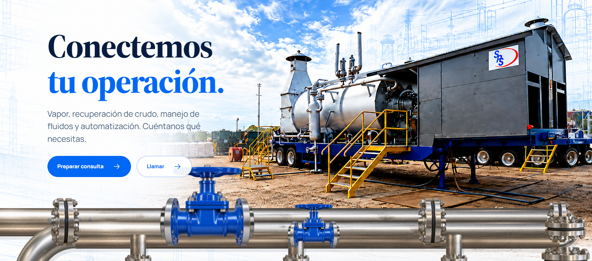<figcaption>contacto 1 · Conectemostu operación.</figcaption></figure><figure>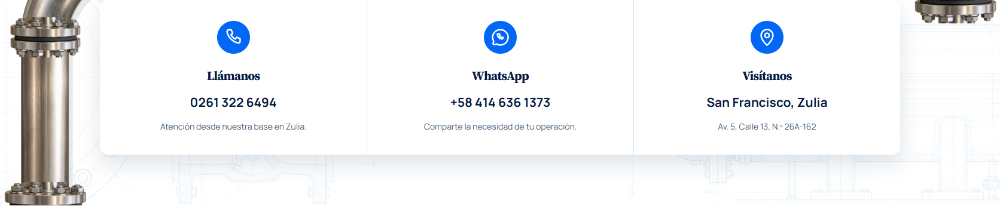<figcaption>contacto 2 · Hablemosdirectamente.</figcaption></figure><figure>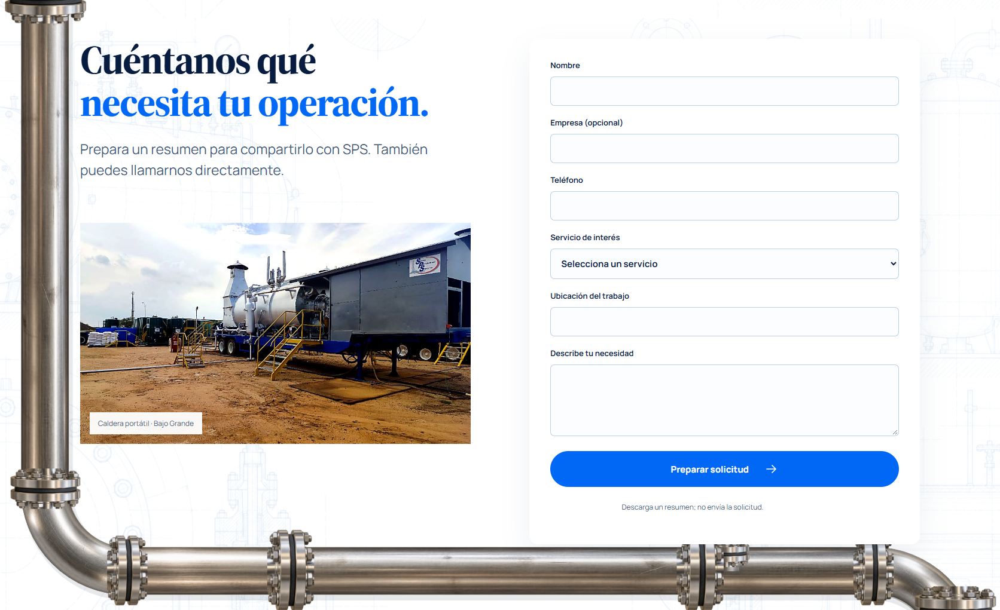<figcaption>contacto 3 · Cuéntanos quénecesita tu operación.</figcaption></figure><figure>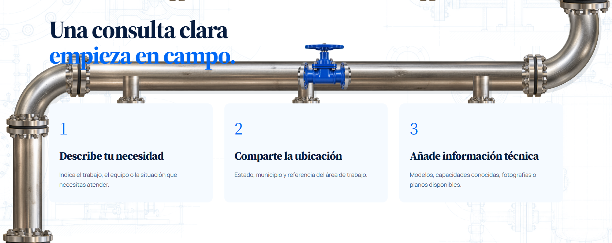<figcaption>contacto 4 · Una consulta claraempieza en campo.</figcaption></figure><figure>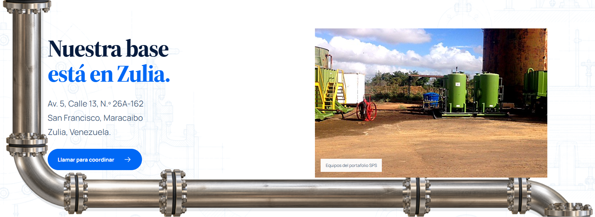<figcaption>contacto 5 · Nuestra baseestá en Zulia.</figcaption></figure><figure>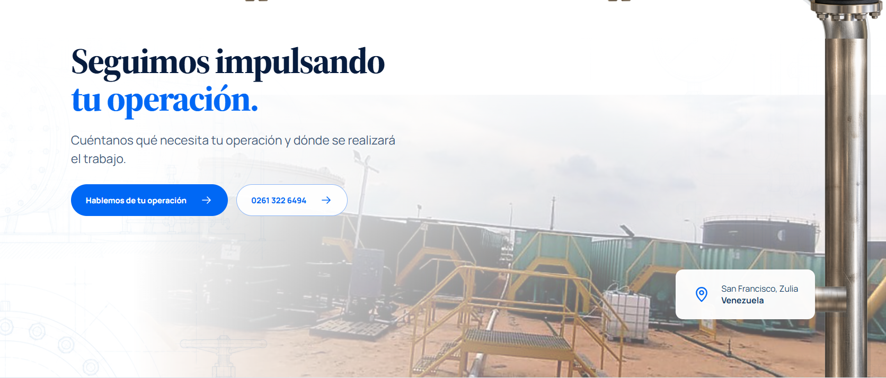<figcaption>contacto 6 · Seguimos impulsandotu operación.</figcaption></figure><figure>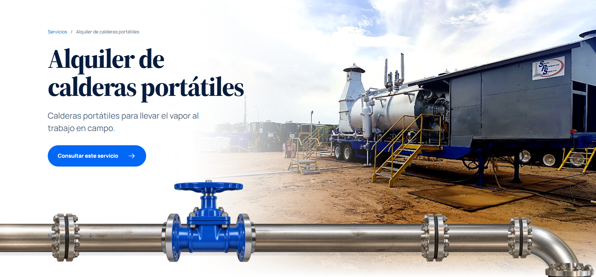<figcaption>servicio 1 · Alquiler de calderas portátiles</figcaption></figure><figure>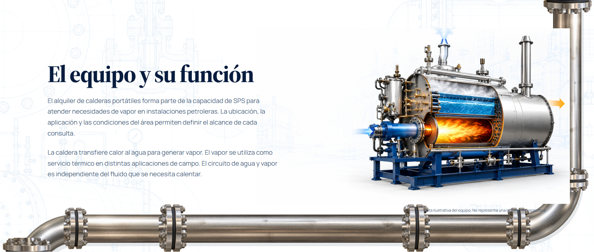<figcaption>servicio 2 · El equipo y su función</figcaption></figure><figure>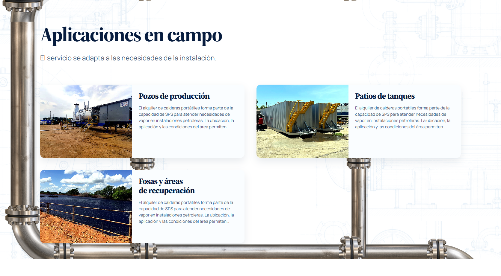<figcaption>servicio 3 · Aplicaciones en campo</figcaption></figure><figure>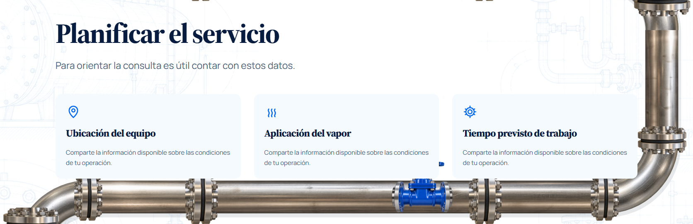<figcaption>servicio 4 · Planificar el servicio</figcaption></figure><figure>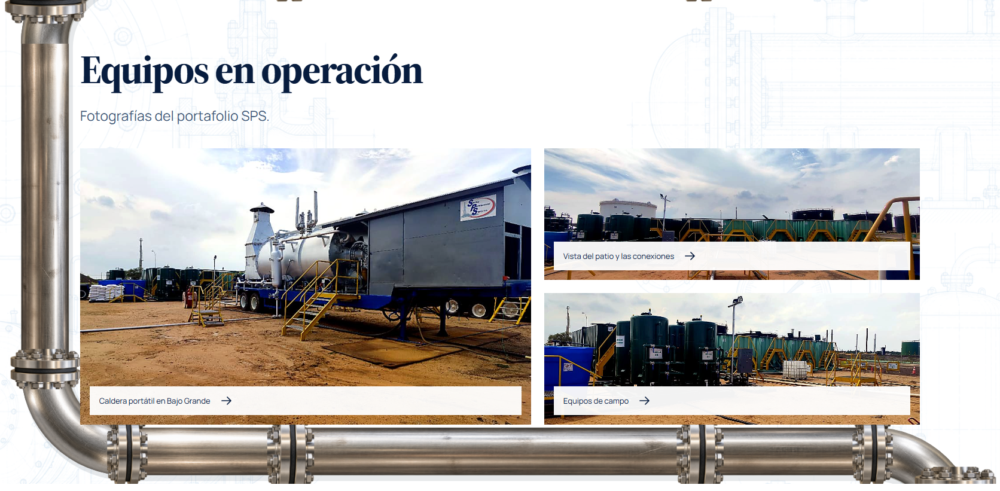<figcaption>servicio 5 · Equipos en operación</figcaption></figure>